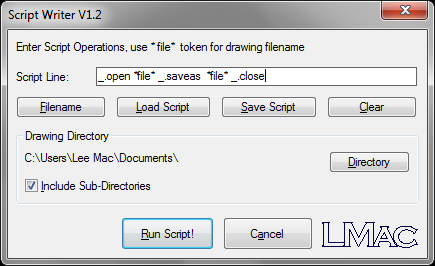

Script Writer
This page is delivered for consistency purposes only, as part of the LeeMac sample module of DynALisp, which shows how DynALisp turns existing AutoLISP programs into a module. The program and its description are the work of Lee Mac, who keeps all the credit for them. The original page, with the latest version, is on Lee Mac's website: https://lee-mac.com/scriptwriter.html
| Function Syntax | LM-ScriptWriter – original syntax: WScript (see aliases) |
| Current Version | 1.2 |
| Compatible with AutoCAD for Mac? | No |
| Compatible with AutoCAD LT? | No |
| Original Page | lee-mac.com/scriptwriter.html |
Program Description
The aim of this program is to reduce the construction of an AutoCAD Script to a single line.
The program assumes the user is conversant in writing scripts for AutoCAD, if not, refer to my tutorial: An Introduction to Script Writing.
This program is designed to greatly reduce the time involved in writing scripts as an alternative to the usual scripting programs available.
Upon starting the program, the user is presented with a dialog interface. Near the top, the user may enter a Script Line - this is the list of commands that will be performed on each drawing in the selected directory (and subdirectories).
The user only needs to write the first line of the script, which will be performed on every drawing in the selected directory; this is achieved through the use of a special token string to represent the drawing filename in the line of script operations.
Example
Consider the example from my script writing tutorial:
_.open "C:\My Folder\Drawing1.dwg" _.circle 0,0,0 5 _.save _Y _.close _.open "C:\My Folder\Drawing2.dwg" _.circle 0,0,0 5 _.save _Y _.close _.open "C:\My Folder\Drawing3.dwg" _.circle 0,0,0 5 _.save _Y _.close
To avoid having to construct the whole script, we can convert the first line for use with the Script Writer program, as follows:
_.open *file* _.circle 0,0,0 5 _.save _Y _.close
The program will then replace this token with the filename of each drawing in the selected directory (and subdirectories), and subsequently run the constructed script.
Additional Controls
The programs provides additional buttons to save even more time in writing the script line operations: the user may quickly insert the *file* token or clear the existing line by pressing the Filename and Clear buttons respectively.
Scripts may also be saved for later use, or existing scripts may be loaded into the program using the Load / Save buttons.
Preview

Bundled program notes
;;---------------------------=={ Script Writer }==-----------------------------;;
;; ;;
;; The program will allow the user to enter a line of script operations to be ;;
;; performed on a directory (and subdirectories) of drawings. ;;
;; ;;
;; When entering the script operations, the filename of the drawing is ;;
;; represented by the *file* token. ;;
;; ;;
;;-------------------------------------------------------------------------------;;
;; ;;
;; FUNCTION SYNTAX: WScript ;;
;; ;;
;;-------------------------------------------------------------------------------;;
;; ;;
;; Author: Lee Mac, Copyright © May 2010 - www.lee-mac.com ;;
;; ;;
;;-------------------------------------------------------------------------------;;
;; ;;
;; Version: ;;
;; ;;
;; 1.0: 31/05/2010 - First Release ;;
;;-------------------------------------------------------------------------------;;
;; 1.1: 01/06/2010 - Added Filename / Load / Save / Clear buttons. ;;
;;-------------------------------------------------------------------------------;;
;; 1.2: 02/06/2010 - Added ability to import/export .scr files. ;;
;;-------------------------------------------------------------------------------;;
Command Names And Aliases
As in every DynALisp module, each program of this sample module has one main command, named LM-*, and the original command names of Lee Mac's page are kept as its aliases: they run the same command, and can be added, renamed or removed in Dyl-Suite (saved in Resources\Aliases.csv).
| Command | Aliases | Name |
|---|---|---|
| LM-ScriptWriter | WSCRIPT | Script Writer |